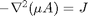
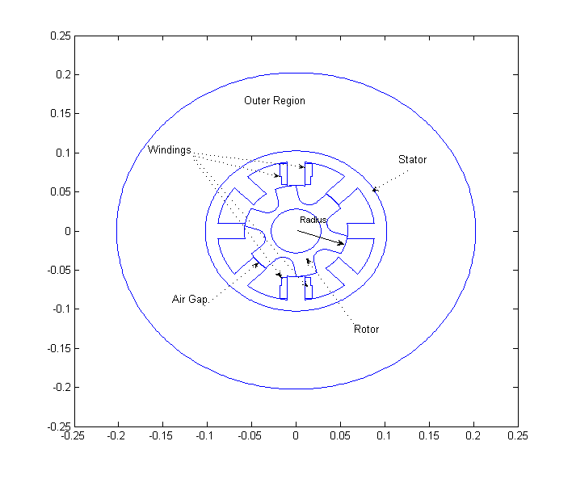
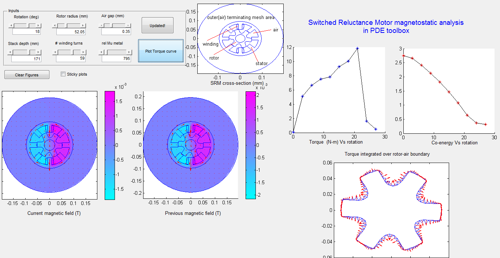
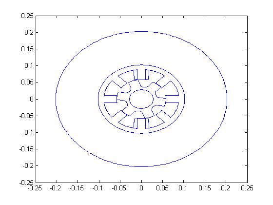
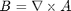
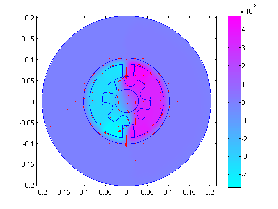
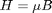

Contents
- Magnetostatic analysis of a Switched Reluctance Motor
- Define parameter defaults and read in variables
- Define geometry : rotor and stator
- Plot geometry
- Formulation dimension
- Add BC
- Mesh
- Coefficients
- Solve
- Post process
- Calculate torque using Maxwell stress method
- Calculate co-energy
- Documentation of classes
- More info and other examples
Magnetostatic analysis of a Switched Reluctance Motor
Introduction
Basic geometry from Switched-Reluctance Motor Torque Characteristics: Finite-Element Analysis and Test Results G. E. Dawson, A. R. Eastham, J. Mizia, IEEE TRANSACTIONS ON INDUSTRY APPLICATIONS, VOL. IA-23, NO. 3, MAY/JUNE 1987
What does it do? : The demo uses the PDE toolbox to solve the magnetostatic PDE :  (A: magnetic potential, mu : magnetic permeability and J : current density) on the geometry of a switched reluctance motor for a specified design point: airGap, relative magnetic permeability (muMetal), #winding turns, stackDepth and rotorRadius. It returns the static torque and coenergy for the design point and plots the B field. Only linear permeable material is considered for the metal part with a constant muMetal value. However, you can modify the script to specify a nonlinear permeability.

- There are two modes of running:
1. Run motor() with the default design point or with an input design point such as motor('rotateAngle',pi/4,...).
2. Run motorGUI() to perform parametric analysis and plot the torque and co-energy curves. motorGUI() calls motor() per design point.
Further Instructions for motorGUI
- run "motorGUI.m". This launches motorGUI.fig - a GUIDE developed frontend around the function motor().
- click on "Click to Update!" for performing individual point simulation based on the parametric inputs - Rotation angle, rotor radius etc
- click on "Plot Torque curve" to product Torque and Coenergy curves
See exampleGeometries.m and exampleFormulation.m on how to use the GeometryObject and the other classes used in this example
Requirements: PDE Toolbox, the package pdetbplus
function [rotorPart,statorPart,torque,coenergy] = motor(varargin)
import pdetbplus.*; % import package for accessing the geometryObject, boundary (arcObject etc), boundaryConditionObject and coeffsObject classes
Define parameter defaults and read in variables
rotateAngle = pi/9; % radians rotorRadius = 58.05; % mm airGap = 0.35; % mm stackDepth = 171; % in mm murMetal = 795; % low magnetic permeability numberOfTurns = 59; % number of turns in the winding rotorPart = []; % geometry part corresponding to the rotor statorPart = []; % geometry part corresponding to the stator returnAfterPlotGeometry = false; % set to true if motor() should return after just plotting geometry showPostProcessIntegrationBoundary = false; figureHandle = []; plotFigureAxes = []; postProcessIntegrationBoundaryAxes = []; for k=1:2:length(varargin) a = varargin(k); b = varargin(k+1); if strcmp(a,'rotateAngle') rotateAngle = b{1}; elseif strcmp(a,'rotorRadius') rotorRadius = b{1}; elseif strcmp(a,'rotorPart') rotorPart = b{1}; elseif strcmp(a,'statorPart') statorPart = b{1}; elseif strcmp(a,'airGap') airGap = b{1}; elseif strcmp(a,'murMetal') murMetal = b{1}; elseif strcmp(a,'numberOfTurns') numberOfTurns = b{1}; elseif strcmp(a,'stackDepth') stackDepth = b{1}; elseif strcmp(a,'returnAfterPlotGeometry') returnAfterPlotGeometry = b{1}; elseif strcmp(a,'showPostProcessIntegrationBoundary') showPostProcessIntegrationBoundary = b{1}; elseif strcmp(a,'returnAfterPlotGeometry') figureHandle = b{1}; elseif strcmp(a,'plotFigureAxes') plotFigureAxes = b{1}; elseif strcmp(a,'postProcessIntegrationBoundaryAxes') showPostProcessIntegrationBoundary = true; postProcessIntegrationBoundaryAxes = b{1}; end end % Prepare figures, axes if isempty(figureHandle) figureHandle = get(0,'CurrentFigure');; end if isempty(plotFigureAxes) plotFigureAxes = get(figureHandle,'CurrentAxes'); else figure(figureHandle); axes(plotFigureAxes); end if showPostProcessIntegrationBoundary if isempty(postProcessIntegrationBoundaryAxes) postProcessIntegrationBoundaryFigure = figure(2); postProcessIntegrationBoundaryAxes = gca; else postProcessIntegrationBoundaryFigure = figureHandle; end end
Define geometry : rotor and stator
statorRadius = rotorRadius + airGap; % mm if nargin < 2 || isempty(rotorPart) || isempty(statorPart) rotorPart = rotor(rotorRadius, 'air'); % look into rotor() to see what region names are defined statorPart = stator(statorRadius); % look into stator() to see what region names are defined end center = pointObject(0.0,0.0); rotorPartRotated = rotorPart.rotate(center,rotateAngle); assembly = statorPart + rotorPartRotated; assembly.exteriorRegion = statorPart.exteriorRegion; % happens to be 'outer' assembly = assembly.scale(1e-3); % convert mm to m stackDepth = stackDepth*1e-3; % convert mm to m
Plot geometry
assembly.plot(); if returnAfterPlotGeometry torque = []; coenergy = []; return; end
Formulation dimension
outputDimension = 1;
Add BC
function [hval,rval,qval,gval] = bcond(x,y,u,t) % Dirichlet condition on the boundary rval(1) = 0; hval(1) = 1; qval = []; gval = []; end % instantiate boundaryConditionObject for convenient definition of BCs bc = boundaryConditionObject(assembly, outputDimension); outsideBCRegionName = 'nonMeshedSpace'; insideBCRegionName = 'outer'; % this region was defined in stator() % BC specified between nonMeshedSpace and outer (the outermost annulus) bc.add('outerRegion',outsideBCRegionName,'innerRegion',insideBCRegionName,'xyutFunction',@bcond);
Mesh
assembly = assembly.initMesh('showMesh',false); showRegion = false; if showRegion % plot individual regions; Note: because of limitation in plot() should % be called after meshing for k=1:length(assembly.regions) figure(k); assembly.plotRegion(assembly.regions{k}); end end
Coefficients
current Density, J = 10 Amps X number of turns / windingArea
windingArea = assembly.getRegionArea('winding1'); % winding1 area equal to other winding areas. currentDensity = -10*numberOfTurns/windingArea; fcoeffMOne = @(x,y,u,ux,uy,time) currentDensity; fcoeffOne = @(x,y,u,ux,uy,time) -currentDensity; % instantiate coeffsObject for convenient definition of coefficients coeff = coeffsObject(assembly, outputDimension); % use linear permeable materials murel = 4*pi*1e-7; % magnetic permeability of free space cfreespace = 1/murel; cmetal = 1/(murMetal*murel); function c = ccoeffMetal(x,y,u,ux,uy,time) c = [cmetal 0;0 cmetal]; end % specify ccoeffMetal() for regions where it is valid; regions referred below were defined in rotor() and stator() coeff.add('region','rotor','cijFunction',@ccoeffMetal); coeff.add('region','stator','cijFunction',@ccoeffMetal); coeff.add('region','core','cijFunction',@ccoeffMetal); function c = ccoeffFreeSpace(x,y,u,ux,uy,time) c = [cfreespace 0;0 cfreespace]; end % free space coefficient for the other regions coeff.add('region','winding1','fiFunction',fcoeffMOne,'cijFunction',@ccoeffFreeSpace); coeff.add('region','winding2','fiFunction',fcoeffOne,'cijFunction',@ccoeffFreeSpace); coeff.add('region','winding3','fiFunction',fcoeffOne,'cijFunction',@ccoeffFreeSpace); coeff.add('region','winding4','fiFunction',fcoeffMOne,'cijFunction',@ccoeffFreeSpace); coeff.add('region','air','cijFunction',@ccoeffFreeSpace); coeff.add('region','outer','cijFunction',@ccoeffFreeSpace);
Solve
a = 0; % magnetostatic problem numAdaptivePasses = 5; [A,p,e,t] = adaptmesh(assembly.geometryFunction, bc.bcFunction,coeff.cFunction,a,coeff.fFunction,'Ngen',numAdaptivePasses); % reset mesh object since adaptmesh changes mesh size assembly.mesh = meshObject('p',p,'e',e,'t',t);
Number of triangles: 8910 Number of triangles: 8954 Number of triangles: 9134 Number of triangles: 9174 Number of triangles: 9458 Number of triangles: 9526 Maximum number of refinement passes obtained.
Post process
calculate 
[dAdx,dAdy] = pdegrad(assembly.mesh.p,assembly.mesh.t,A); Bx = dAdy; By = -dAdx; hold on; pdeplot(assembly.mesh.p, assembly.mesh.e, assembly.mesh.t, 'xydata', A, 'contour','off','colorbar','on','mesh','off','flowdata',[Bx;By]); axis equal;
Calculate torque using Maxwell stress method
Magnetic field intensity ; but we calculate H from pdecgrad() for convenience
[cdAdx,cdAdy] = pdecgrad(assembly.mesh.p,assembly.mesh.t,@coeff.cFunction,A);
Hx = cdAdy;
Hy = -cdAdx;
function dT = differentialTorque(xmid,ymid,nxmid,nymid,inputs)
bx = inputs{1};
by = inputs{2};
hx = inputs{3};
hy = inputs{4};
% dT = (position X H)(n.B) + (position X B)(n.H) - (position X n)(H.B)
dT3 = 0.5*((xmid*hy-ymid*hx)*(nxmid*bx+nymid*by) + (xmid*by-ymid*bx)*(nxmid*hx+nymid*hy) - (xmid*nymid-ymid*nxmid)*(bx*hx+by*hy));
dT = [0 0 dT3]';
end
if nargout > 1
if showPostProcessIntegrationBoundary
figure(postProcessIntegrationBoundaryFigure);
axes(postProcessIntegrationBoundaryAxes);
end
% integrate torque differential dT over air-rotor boundary but still on
% the air side
torque = assembly.integrateOutsideBoundary('innerRegion','rotor','outerRegion','air','integrand',@differentialTorque,'showBoundary',showPostProcessIntegrationBoundary,Bx,By,Hx,Hy)*stackDepth;
axes(plotFigureAxes);
else
torque = [];
end
Calculate co-energy
function dC = differentialCoenergyPart1a(xmid,ymid,inputs) % avector = [0 0 inputs{1}]; % J = [0 0 currentDensity]; % dC = dot(avector,J); dC = inputs{1}*currentDensity; end function dC = differentialCoenergyPart1b(xmid,ymid,inputs) % avector = [0 0 inputs{1}]; % J = [0 0 -currentDensity]; % dC = dot(avector,J); dC = inputs{1}*(-currentDensity); end function dC = differentialCoenergyPart2(xmid,ymid,inputs) bx = inputs{1}; by = inputs{2}; hx = inputs{3}; hy = inputs{4}; % dC = 0.5*dot(B,H); dC = 0.5*(bx*hx+by*hy); end % interpolate A from mesh vertices to centroids of mesh elements Atriangles = pdeintrp(assembly.mesh.p,assembly.mesh.t,A); % integrate differentialCoenergyPart1a/b() over the windings (where % the current density contribution exists) coenergy1 = assembly.integrateOverRegion('integrand',@differentialCoenergyPart1a,'region','winding1','integrandInput',{Atriangles}); coenergy1 = assembly.integrateOverRegion('integrand',@differentialCoenergyPart1b,'region','winding2','integrandInput',{Atriangles}) + coenergy1; coenergy1 = assembly.integrateOverRegion('integrand',@differentialCoenergyPart1a,'region','winding4','integrandInput',{Atriangles}) + coenergy1; coenergy1 = assembly.integrateOverRegion('integrand',@differentialCoenergyPart1b,'region','winding3','integrandInput',{Atriangles}) + coenergy1; coenergy1 = coenergy1*stackDepth; % integrate differentialCoenergyPart2() over all regions coenergy2 = 0; for k=1:length(assembly.regions) coenergy2 = assembly.integrateOverRegion('integrand',@differentialCoenergyPart2,'region',assembly.regions{k},'integrandInput',{Bx,By,Hx,Hy}) + coenergy2; end coenergy2 = coenergy2 * stackDepth; coenergy = coenergy1 - coenergy2;
Documentation of classes
See help for geometryObject lineObject arcObject pointObject coeffsObject boundaryConditionObject meshObject
More info and other examples
end
ans =
pdetbplus.geometryObject
Package: pdetbplus
Properties:
name: 'rotor'
exteriorRegion: 'air'
mesh: [1x1 pdetbplus.meshObject]
boundary: {1x36 cell}
regions: {'air' 'core' 'rotor'}
geometryFunction: @(varargin)self.geometryFunction_impl(varargin{:})
regionToId: [3x1 containers.Map]